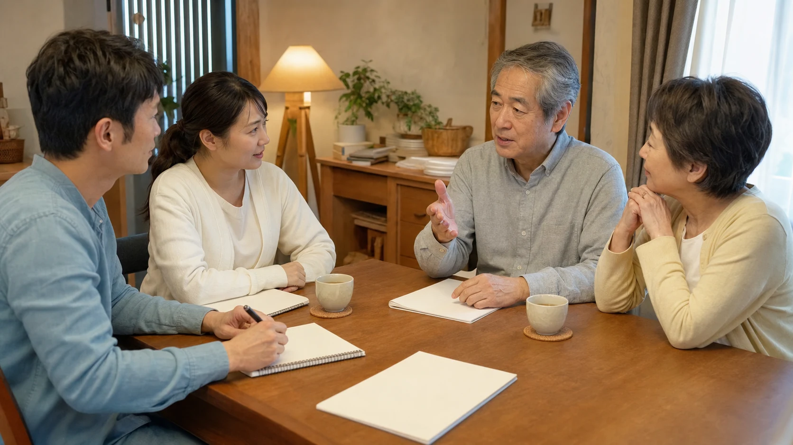
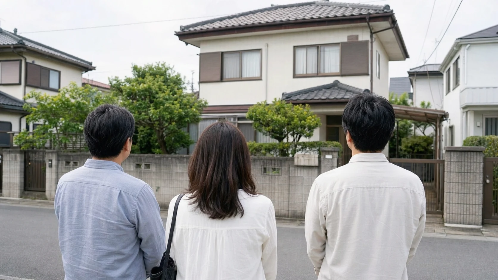
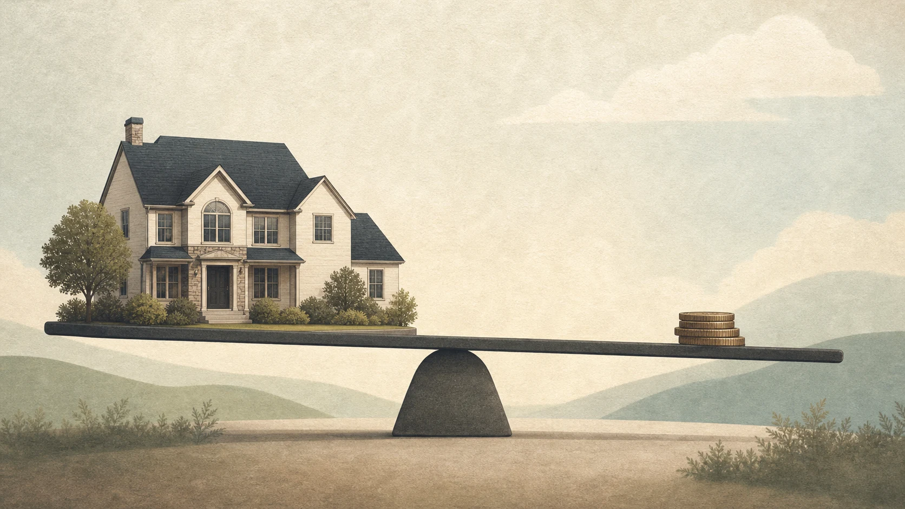

「実家じまい」と聞くと、荷物をすべて片づけて、家を売るか解体するかを決める作業をイメージする方が多いかもしれません。しかし、実家じまいは、家・物・思い出を次へどう引き継ぐかを考えるプロセスです。この記事では、片づけを急ぐ前に家の可能性を知り、家族の記憶をどう引き継ぐかまで含めて考える視点を紹介します。
1. 実家じまいは、家族が納得できる選択を残すための準備
親が施設に入る、あるいは亡くなったことをきっかけに、実家をどうするかを考えなければならない場面がやってきます。多くの方が最初に思い浮かべるのは「片づけて、売るか壊すか」という二択かもしれません。しかし、実家じまいは、家と物を空にするためだけの作業ではありません。住み続けてきた人の思いと、これから管理や判断を担う家族の現実を話し合いながら、家・物・思い出の行き先を考える準備です。
急いで片づけを始める前に、この家にどんな可能性が残っているか、家族の間で何を大切にしたいかを確認しておくことが大切です。
2. 片づけ・解体の前に家の可能性を知る
片づけや解体を検討する前に、次のような点を確認しておくと、選択肢を狭めずに済みます。
- 家の状態：構造や設備がどの程度の状態にあるか。専門家によるインスペクション（住宅診断）は、建物の状態を把握するための一材料であり、住み継ぐ、賃貸に出すといった選択肢を検討する際に役立ちます。
- 立地や周辺環境：賃貸需要があるか、観光地に近いかなど、活用の可能性に関わる要素。
- 家族の希望：誰か住み継ぎたい人がいるか、集まる拠点として残したいという声はあるか。
これらを確認しないまま、「片づけるのが大変だから」という理由だけで解体や売却を急いでしまうと、後から「もっと別の選択肢があったのでは」と感じることにもなりかねません。

3. 思い出をどう引き継ぐか
実家じまいで難しいのは、物理的な片づけよりも、思い出の詰まった品々をどう扱うかという心理的な部分かもしれません。すべてを保管することは現実的ではない一方、すべてを処分することに抵抗を感じることもあります。
一つの方法として、思い出の品そのものを保管するのではなく、写真に撮って記録として残すという選択肢があります。アルバムや古い道具、手紙など、家族にとって意味のあるものを写真に収めておけば、物としては手放しても、記憶としては残すことができます。千葉利宏さん、谷内信彦さん、村島正彦さん、桑原豊さんの『実家の片づけ 活かし方』（日経BP、2014年）など、実家の片づけを扱った書籍では、こうした「残し方」の工夫が具体的に紹介されています。
すべてを一人で判断せず、家族で「これは残したい」「これは写真で十分」と話し合いながら進めることが、後悔を減らすポイントです。

4. 家族が集う拠点・住み継ぐ家という選択肢
実家を手放す以外にも、次のような選択肢があります。
- 誰かが住み継ぐ：子や親族の誰かが実際に住む。
- 家族が集う拠点として残す：普段は誰も住まなくても、法要や集まりの場として維持する。
- 一部だけ活用する：全体を使うのではなく、一部の部屋だけをリフォームして使うという方法もあります。
これらは維持費や管理の手間がかかるため、誰がどう負担するかを事前に話し合っておく必要があります。「思い出があるから残したい」という気持ちだけで判断せず、維持できる体制があるかどうかも合わせて考えることが大切です。
実家の名義が亡くなった親のままの場合は、売却や活用を検討する前に相続登記の状況を確認します。相続登記は2024年4月1日から義務化されています。
5. 賃貸・民泊・売却は条件を見て考える
住み継ぐ人がいない場合、賃貸・民泊・売却といった選択肢が検討対象になります。それぞれに条件があります。
- 賃貸：安定した収入が見込める可能性がありますが、リフォーム費用や空室リスク、管理の手間が発生します。
- 民泊：住宅宿泊事業法による民泊の場合、事業を行うには届出が必要で、営業日数は年間180日以内です。自治体の条例で追加の制限が設けられる場合もあります。立地・需要・管理体制・法的条件を確認し、継続して運営できる場合に選択肢となります。なお、民泊には旅館業法に基づく許可や国家戦略特区の認定による方法もあります。
- 売却：まとまった資金を得られる一方、家や思い出を手放すことへの心理的な区切りが必要になります。
どの選択肢にも一長一短があり、最適解は家庭の状況によって異なります。複数の選択肢を比較したうえで、家族の合意を形成していくことが重要です。

6. 家族の手と専門家の手を分ける
実家じまいを家族だけで進めようとすると、時間的にも精神的にも大きな負担になります。家庭ごみの収集運搬を依頼する場合は、一般廃棄物収集運搬業の許可を受けた事業者または市区町村から委託された事業者かを自治体の案内で確認します。家の状態確認は建築士やインスペクション事業者に、法務・税務の手続きは司法書士や税理士に依頼するなど、専門家の手を借りる部分を作ることで負担を分散できます。
家族にしかできないこと（残したい思い出の選別、住み継ぐかどうかの意思決定）と、資格や許可の確認が必要なこと（ごみの収集運搬、建物の状態確認、登記・税務手続き）を分けて考えることが、実家じまいを無理なく進めるコツです。